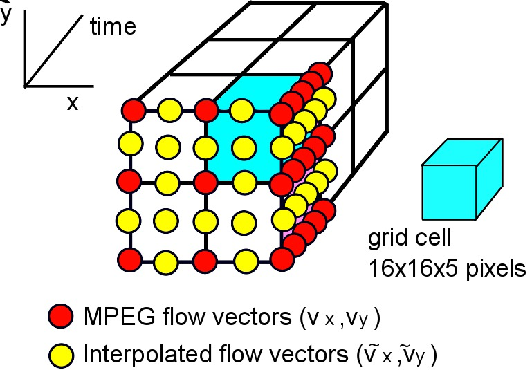
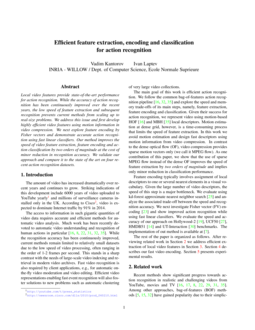

Efficient feature extraction, encoding and classification for action recognition
People
Abstract
Local video features provide state-of-the-art performance for action recognition. While the accuracy of action recognition has been continuously improved over the recent years, the low speed of feature extraction and subsequent recognition prevents current methods from scaling up to real-size problems. We address this issue and first develop highly efficient video features using motion information in video compression. We next explore feature encoding by Fisher vectors and demonstrate accurate action recognition using fast linear classifiers. Our method improves the speed of video feature extraction, feature encoding and action classification by two orders of magnitude at the cost of minor reduction in recognition accuracy. We validate our approach and compare it to the state of the art on four recent action recognition datasets.
Paper
|  |
CVPR paper CVPR poster
@inproceedings{kantorov2014,
author = {Kantorov, V. and Laptev, I.},
title = {Efficient feature extraction, encoding and classification for action recognition},
booktitle = {Proc. Computer Vision and Pattern Recognition (CVPR), IEEE, 2014},
year = {2014},
}
|
Code
The code for MPEG flow-based descriptors and fast Fisher vector signatures is available on GitHub.
Datasets
- Hollywood-2 dataset website
- UCF-50 dataset website
- HMDB-51 dataset website
- UT-Interaction dataset website
Funding
This research project is supported by Quaero and MSR-INRIA.
Copyright Notice
The documents contained in these directories are included by the contributing authors as a means to ensure timely dissemination of scholarly and technical work on a non-commercial basis. Copyright and all rights therein are maintained by the authors or by other copyright holders, notwithstanding that they have offered their works here electronically. It is understood that all persons copying this information will adhere to the terms and constraints invoked by each author's copyright.